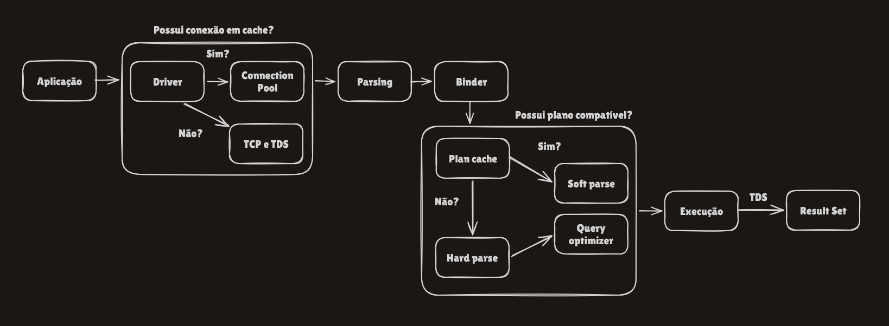

Da Query ao Result Set
Este artigo servirá de guia prático e teórico sobre o que acontece por baixo dos panos quando você roda um SELECT no SQL Server. Muita gente sabe escrever T-SQL, mas poucos param pra entender o caminho que a query percorre dentro do motor — e é exatamente esse caminho que separa um DBA que só executa comando de um DBA que resolve incidente sozinho.
A parte de rede (driver, conexão, TCP) será tratado de maneira introdutória. É importante saber que ela existe, mas o que realmente importa pro seu dia a dia mora do parser pra frente — é ali que a esmagadora maioria dos problemas de performance nasce.
Sabendo disso, vamos começar pelo início: como a query chega até o servidor
Sua aplicação não fala direto com o motor do SQL Server. Ela passa por um driver (o SqlClient do .NET, por exemplo), que mantém um pool de conexões — um cache de conexões já abertas e prontas, porque abrir uma conexão do zero (handshake de rede mais autenticação) é caro. Se já existe uma conexão livre no pool com a mesma configuração, ela é reaproveitada; senão, uma nova é criada via handshake TCP e autenticada usando o protocolo de aplicação do SQL Server, o TDS (Tabular Data Stream), que também é o formato usado pra mandar a query e trazer o resultado de volta.
Fato curioso: se sua aplicação abre e fecha conexão a cada operação sem pooling configurado direito, você paga o custo de handshake toda hora. Isso aparece como latência "misteriosa" que não tem nada a ver com a query em si — é um dos primeiros lugares a olhar quando "o banco tá lento" mas o plano de execução está ok.
A partir daqui a query já chegou fisicamente ao servidor. É aqui que a arquitetura interna do SQL Server assume, e é nisso que o resto do artigo foca.
Passada a rede, entramos no motor de verdade: o Parser
Quando a query chega, a primeira coisa que acontece é uma checagem puramente de sintaxe, feita pelo Command Parser. Ele não sabe se a tabela existe, não sabe se a coluna existe — só verifica se o T-SQL está escrito de um jeito que faz sentido gramaticalmente.
Se você já recebeu um erro do tipo Incorrect syntax near..., foi o parser reclamando. Ele nem chegou a olhar o banco de dados. É a fase mais barata e mais rápida de tudo — erro de sintaxe nunca é problema de performance, é problema de escrita da query.
Depois da sintaxe, vem a checagem de verdade: o Binder
Passada a sintaxe, entra o binder (também chamado de algebrizer). Ele resolve nomes — a tabela Sales.Order existe? a coluna CustomerID existe nela? — e tipos: dá pra comparar essa coluna INT com esse parâmetro VARCHAR? É aqui que aparecem erros como Invalid object name ou Invalid column name.
Fato curioso: conversões de tipo implícitas acontecem nessa fase e têm consequência direta lá na frente. Uma comparação entre tipos diferentes pode impedir o otimizador de usar um índice do jeito mais eficiente — isso se chama perda de SARGability, quando a query deixa de conseguir fazer um seek direto no índice. Se você já viu um WHERE CONVERT(...) = @parametro transformar um index seek num table scan, a raiz do problema está exatamente aqui.
Antes de pensar, o motor verifica se já não foi feito antes:
Essa verificação ocorre pelo plan cache, guardado em memória. Se achou um plano compatível com o texto exato da query e com as configurações exatas da sessão, o motor pula direto pra execução — isso se chama soft parse, é rápido e barato. Se não achou, precisa compilar um plano do zero — o hard parse, a parte cara.
O detalhe que complica a compreensão: a comparação é quase literal. Um espaço a mais, letras maiúsculas diferentes, ou até as opções SET da sessão sendo diferentes (como ANSI_NULLS) geram uma entrada diferente no cache — mesmo que a query, pro ser humano, seja "a mesma".
Isso pode parecer só um detalhe técnico, mas gera dois problemas opostos na prática:
Queries ad-hoc com literais embutidos (WHERE ClienteID = 3512 de um jeito, WHERE ClienteID = 8821 de outro) geram um plano novo pra cada valor diferente. Isso enche o cache de lixo — o chamado plan cache bloat — e consome CPU o tempo todo recompilando algo que já foi compilado mil vezes com outro valor. A solução clássica é parametrizar as queries (sp_executesql com parâmetros, ou procedures) em vez de concatenar valores no texto do SQL.
Do outro lado, quando uma query é parametrizada, o SQL Server compila o plano baseado nos valores do parâmetro da primeira execução e guarda esse plano pra reusar nas próximas — mesmo que os valores futuros tenham uma distribuição bem diferente. Isso tem nome: parameter sniffing. Resultado clássico: a stored procedure roda rápido pra um cliente pequeno e trava quando alguém chama com o cliente gigante, porque o plano foi otimizado pro cenário errado.
Fato curioso: DBCC FREEPROCCACHE limpa o cache (inteiro ou por plano específico) e é útil pra forçar recompilar depois de uma mudança de índice ou estatística. Mas usar em produção sem necessidade derruba a performance geral temporariamente, porque tudo vai precisar de hard parse de novo.
Observe o exemplo abaixo, útil pra caçar exatamente esse tipo de comportamento:
-- Ver o texto e o plano cacheado de uma query específica
SELECT cp.plan_handle,
cp.usecounts,
st.text
FROM sys.dm_exec_cached_plans cp
CROSS APPLY sys.dm_exec_sql_text(cp.plan_handle) st
WHERE st.text LIKE '%ClienteID%'
ORDER BY cp.usecounts DESC;
-- Comparar min/max/avg do tempo de execução: sinal clássico de parameter sniffing
SELECT sql_handle, plan_handle,
execution_count,
total_elapsed_time / execution_count AS avg_elapsed_us,
min_elapsed_time, max_elapsed_time
FROM sys.dm_exec_query_stats
ORDER BY (max_elapsed_time - min_elapsed_time) DESC;Não achou no cache? Entra o Otimizador
O Query Optimizer é a parte mais sofisticada do motor. Ele não tenta achar o plano perfeito; ele tenta achar um plano bom o suficiente rápido o suficiente, porque gastar 10 segundos otimizando uma query que roda em 5 milissegundos seria um desperdício.
O processo, resumido, segue três etapas: primeiro uma simplificação, que reescreve a query de formas equivalentes mais fáceis de otimizar (remove joins redundantes, resolve contas com valores constantes). Depois, uma checagem de plano trivial — se só existe um jeito razoável de executar a query, tipo uma busca por chave primária, ele usa esse plano direto, sem comparar alternativas. Se não for trivial, entra a otimização por custo: vários planos candidatos são gerados (ordens diferentes de join, seek vs. scan) e o custo de cada um é estimado usando estatísticas — informação sobre quantas linhas existem e como os valores estão distribuídos.
Fato curioso: estatísticas desatualizadas são a causa nº 1 de planos ruins. Se a estatística de uma tabela diz que ela tem 100 linhas mas na verdade tem 10 milhões, o otimizador vai tomar decisões erradas — por exemplo, escolher nested loop quando deveria ser hash join. É por isso que UPDATE STATISTICS e a manutenção automática de estatísticas são rotina básica de DBA, não luxo.
Dois parâmetros de instância entram em jogo aqui: Cost Threshold for Parallelism e MAXDOP dizem ao otimizador quando vale a pena considerar um plano paralelo em vez de um plano serial. Mal configurados, fazem queries pequenas ganharem paralelismo desnecessário — isso aparece como os waits CXPACKET/CXCONSUMER.
Antes de executar, o otimizador também estima quanta memória a query vai precisar (pra ordenações, hash joins etc.) e reserva isso antecipadamente — o chamado memory grant. Se o servidor não tem memória livre suficiente pra conceder, a query fica esperando no wait RESOURCE_SEMAPHORE, sintoma clássico de pressão de memória, muitas vezes causado por estimativa de linhas errada.
E quando a estimativa erra feio? Excessive Grant e Spill
Quando o banco estima errado (pensando que tem 100 linhas, mas tem 100 mil), ele erra também na alocação de memória. Isso tem nome: Excessive Grant ocorre quando o SQL aloca memória demais, desperdiçando recursos vitais do servidor e impedindo outras conexões de trabalharem — ou aloca memória de menos, baseando-se numa estimativa falsa.
E o que acontece se o SQL Server alocar pouca memória pra uma operação pesada de ordenação (Sort)? Os dados não vão caber. Como rota de fuga, o banco "derrama" (Spill) essa operação diretamente pro disco, através do tempdb. É aí que a velocidade despenca, pois o disco pode ser de milhares a centenas de milhares de vezes mais lento que a memória RAM. No plano de execução isso aparece como um aviso amarelo direto no operador de Sort ou Hash Match — vale sempre abrir as propriedades quando a query está mais lenta do que deveria.
Plano em mãos, chegou a hora: a Execução
Com o plano escolhido (ou reaproveitado do cache), o Query Executor roda ele. A imagem mental mais útil aqui: o plano é uma árvore, e as linhas sobem por ela uma a uma (ou em pequenos lotes), sendo "puxadas" de baixo pra cima — não é tudo processado de uma vez só.
Locks e isolamento:
Antes de tocar numa linha, o SQL Server precisa garantir que ninguém mais está mexendo nela de um jeito incompatível — isso é controlado pelo Lock Manager, seguindo o nível de isolamento da sessão (o padrão é READ COMMITTED).
Bloqueio (blocking) acontece quando uma sessão precisa de um lock que outra já segura de forma incompatível — ela espera. Isso aparece como waits do tipo LCK_M_*. Não é sempre um problema, é o preço da consistência, mas cadeias longas de bloqueio são sintoma de transações mal desenhadas.
Fato curioso: se uma única instrução acumula muitos locks de linha/página sobre a mesma tabela (na prática, perto de 5.000), o SQL Server tenta trocar todos aqueles locks finos por um lock de tabela inteira — o chamado lock escalation, pra economizar memória de controle. O efeito colateral é que, enquanto isso, ninguém mais consegue mexer naquela tabela. É por isso que operações de DELETE/UPDATE em massa costumam ser quebradas em lotes menores, tipo DELETE TOP (1000) ... WHILE @@ROWCOUNT > 0, pra nunca chegar perto desse limiar.
Buffer pool: a memória decide se o disco será requisitado.
Quando o plano precisa de uma página de dados, ele primeiro verifica se ela já está em memória, no buffer pool — o maior consumidor de RAM do SQL Server. Se estiver (cache hit), é servida na hora; se não estiver (cache miss), é lida do disco.
A métrica Page Life Expectancy (PLE) — quanto tempo, em segundos, uma página costuma ficar em memória antes de ser descartada — é um dos indicadores mais usados pra saber se o servidor tem memória suficiente pro tamanho do banco. PLE caindo muito, ou baixo persistentemente, é sinal clássico de pressão de memória.
Escrevendo dados: a ordem importa!
Para INSERT/UPDATE/DELETE existe uma regra que não pode ser quebrada: write-ahead logging (WAL). A modificação é gravada primeiro no log de transações, em disco, e só depois a página em memória é alterada. O COMMIT só é confirmado ao cliente depois que o log — não os dados — foi gravado com sucesso.
A página alterada fica marcada como "suja" (dirty) em memória, sem ir pro arquivo de dados na hora. Duas rotinas de fundo cuidam disso de forma assíncrona: o Lazy Writer, que acorda de tempos em tempos (ou sob pressão de memória) pra escrever páginas sujas em disco, e o Checkpoint, que roda periodicamente e grava todas as páginas sujas até aquele ponto, limitando o tempo de recovery numa reinicialização.
Fato curioso: essa separação entre "commit rápido" (só o log) e "escrita física lenta" (assíncrona) é o motivo pelo qual o log de transações costuma ser o gargalo de I/O em bancos com muita escrita — não o arquivo de dados. Waits do tipo WRITELOG apontam exatamente pra esse gargalo.
Para finalizar: o resultado chega em stream:
O resultado não é montado inteiro no servidor pra depois ser mandado — ele é transmitido em stream, linha por linha, à medida que é produzido. É por isso que um SELECT numa tabela grande sem TOP/paginação já começa a trazer resultado quase na hora, mesmo que o processamento no servidor ainda não tenha terminado.
Se o cliente (aplicação, relatório, ferramenta) processa cada linha devagar, o SQL Server fica esperando o cliente consumir o que já foi produzido — isso aparece como o wait ASYNC_NETWORK_IO. É um erro comum de diagnóstico achar que é "problema de rede" quando na real é o cliente que está lento pra consumir, não a rede em si nem o SQL Server.
Guarda essa lista — é o que eu mais consulto quando algo está estranho em produção:
- Plano em cache / qual é ele: sys.dm_exec_cached_plans, sys.dm_exec_sql_text
- Suspeita de parameter sniffing: sys.dm_exec_query_stats, comparando min/max/avg de elapsed_time
- Estatísticas desatualizadas: sys.dm_db_stats_properties, STATS_DATE()
- Blocking / lock escalation: sys.dm_tran_locks, sys.dm_os_waiting_tasks
- Pressão de memória: wait RESOURCE_SEMAPHORE, sys.dm_exec_query_memory_grants
- Saúde do buffer pool: contador Page Life Expectancy, sys.dm_os_buffer_descriptors
- Gargalo de log/escrita: wait WRITELOG, sys.dm_db_log_stats
- Cliente lento consumindo resultado: wait ASYNC_NETWORK_IO
Essas são as principais paradas que acontecem entre você apertar F5 e a primeira linha aparecer na tela. A regra de ouro é: da próxima vez que uma query estiver lenta, não vá direto pro índice. Sintaxe e binding raramente são o problema, mas cache de plano, estatísticas, memória e locks respondem pela grande maioria dos incidentes reais.
Observe o mapa a seguir para sempre se lembrar do que foi tratado:

Obrigado por ler até aqui e bons estudos!